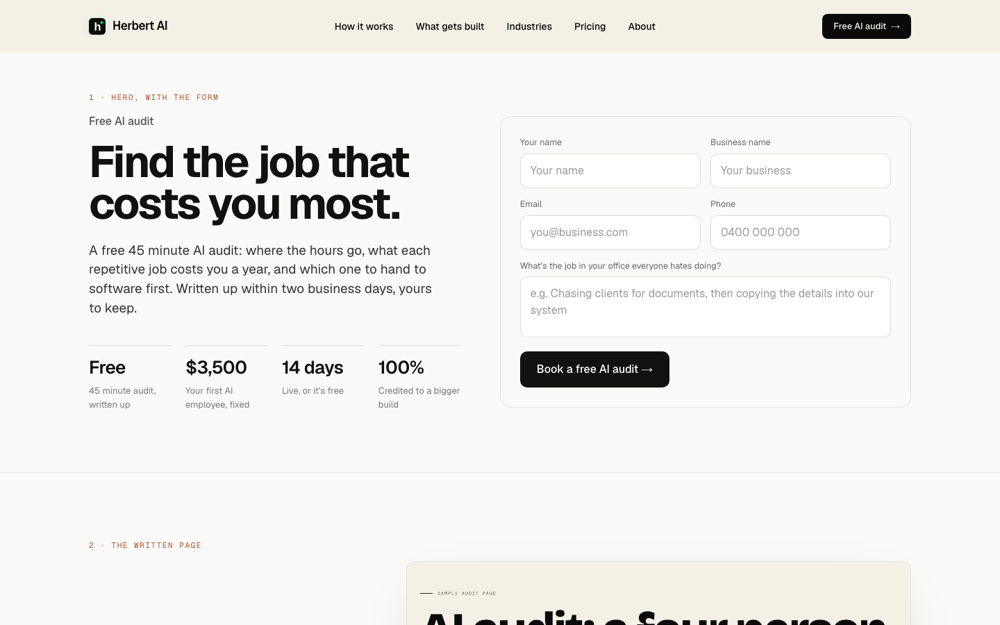
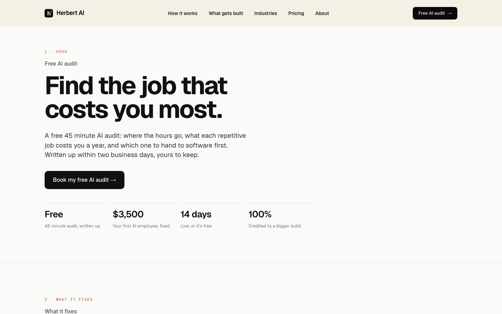
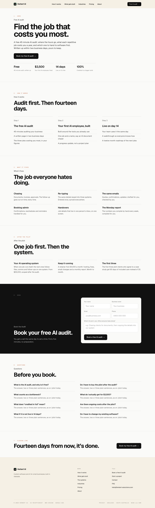
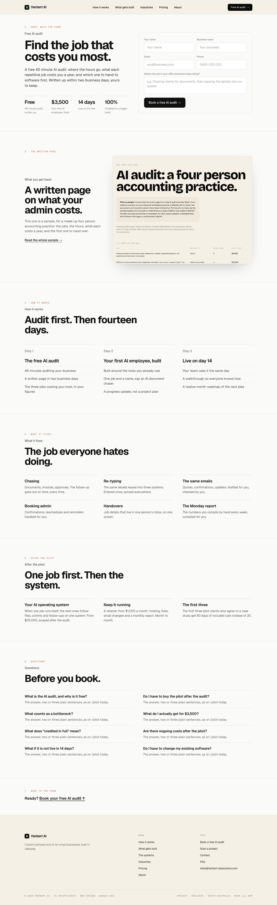

The whole page each way at 1440, in the new register, scaled down; the first screens are under them at the same scale. Copy is today's /pilot copy and the sample is the real sample audit page; the numbered tags name each section. Words and details come after the pick.
A. Today’s order, restyled: the first screenB. The form first: the first screen

C. The homepage’s shape: the first screen

A. Today’s order, restyledHero, how it works, what it fixes, after the pilot, the form, questions, a closing line. The form sits two thirds down.

B. The form firstThe offer and the form on the first screen, then the written page shown at size, how it works, what it fixes, after the pilot, questions, and a link back up. Recommended.

C. The homepage’s shapeHero, what it fixes, how it works, the written page, after the pilot, questions, and the form as the last section, on the ink band like the homepage.